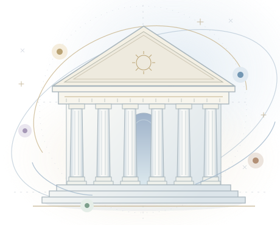

A home for your work.
Choose a folder for your tasks, files, and ideas.
Service connection and API verification are separate. This panel reads saved results; it does not run API tests.
Choose a project, connect a provider, and give your council a goal.

Choose a folder for your tasks, files, and ideas.
Bring together the right minds to think, build, fix and explore — with you, from idea to outcome.
Describe a goal to get started.
Prepare changes from an artifact or file.
Real outputs, with their source task and saved location.
Current project
Secret files are excluded. Changes are written only after a fresh diff is accepted.
Local schedules need a running service and an awake computer.
Shared skills, tools, memory, messaging, and engineering isolation.
Distinct minds. A shared purpose.